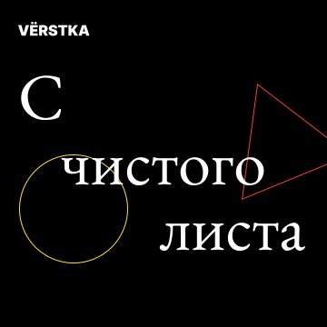
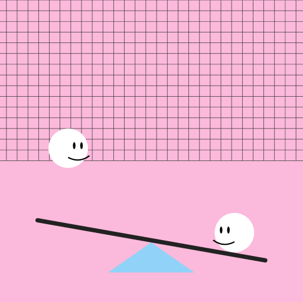
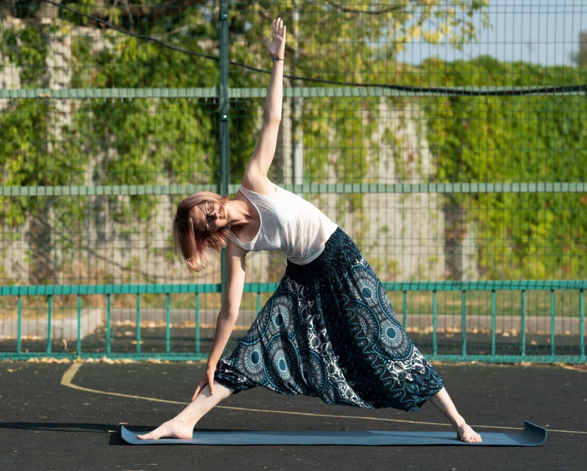
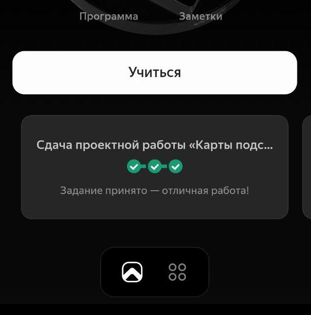
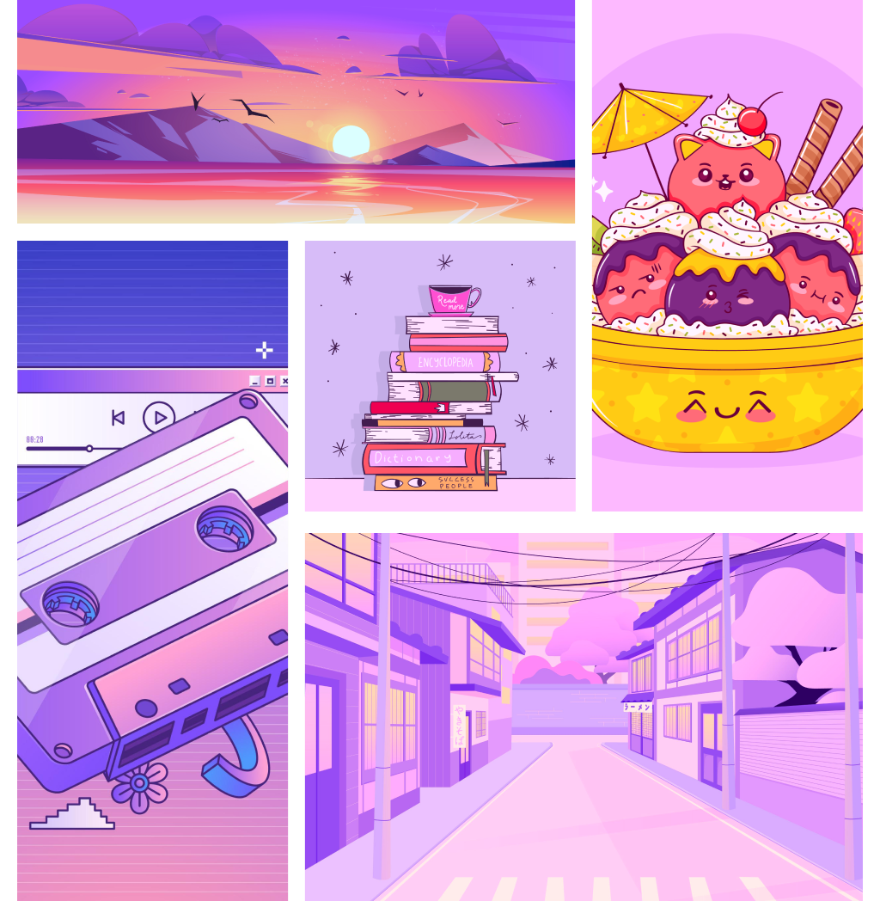
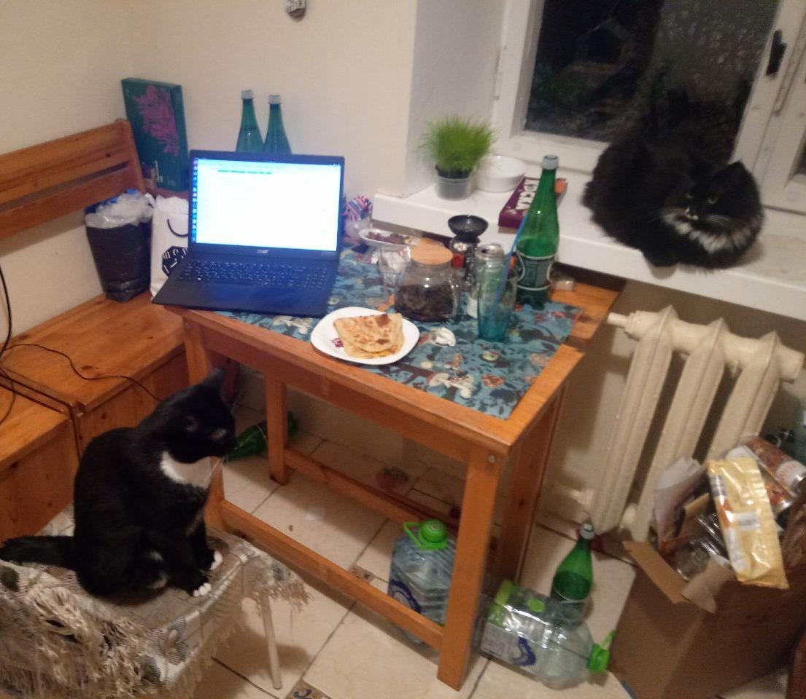

Это было самое начало пути. На этом этапе важно было проникнуться основами
и настроиться на учёбу. И, возможно, подумать, как новые знания могут
повлиять на ваше будущее.
Первый раз в жизни плачу за образование 😀 На работе знания CSS ой как полезны,
но пройденных бесплатных курсов и поиска ответов на свои вопросы в интернете
не хватает. Решила пройти курс, чтобы знать, какие возможности вообще есть,
и чувствовать себя увереннее.
Начинала поиски с бесплатных вебинаров. Вебинары Skillbox оттолкнули, потому что в них
98% воды и 2% полезной информации, которую можно было бы изложить в двух абзацах.
Ну прямо сразу неприятно, что у меня отнимают время. Вводная часть курса на Яндекс Практикуме зацепила.
Подача материала приятная, и сразу что-то полезное нашлось. Раньше я никогда не задумывалась о том,
как формируются названия цветов в HEX и RGB. Оказалось, что там всё просто и логично -
в HEX каждая пара цифр составляет число в 16-ричной системе. А в RGB - то же самое,
только в десятичной системе. Поэтому перевод цветов из HEX в RGB - это просто перевод
из 16-ричной системы в десятичную. Круто!
А также я узнала, что существует цвет бедра испуганной нимфы и другие цвета с забавными названиями 🙂
С удовольствием поделилась этим фактом с коллегами!
А если серьёзно, то я решила, что тренироваться на маленьких проектах это классно.
Это не в кодобазе на миллион строк с нуля разбираться.
Нулевой спринт плохо помню, там было повторение, в основном.
В фигме я сделала уже сотни рисунков до этого, и VSCode пользуюсь. Кажется прошёл легко.
1 спринт: Я — чистый лист

На первых этапах мы работали со страхами и сомнениями, которые часто испытывают новички.
Один из них — страх перед чистым листом. Это, конечно же, намного сложнее,
чем боязнь куска бумаги. Часто за этим ощущением скрываются более глубокие вопросы:
с чего начать? а вдруг будет слишком сложно? что, если я не справлюсь?
Первый проект. Первое ревью. Первые правки с помощь PixelPerfect. Крутая штука.
Флексы. Помню один бесплатный курс, где сначала обходились без флексов, чтобы показать,
как люди раньше страдали, и только потом переходили к флексам, а про гриды и вовсе не упоминали.
Радует, что тут показывают самые современные подходы, и даже функции, которые только недавно
появились и ещё не во всех браузерах поддерживаются.
Кажется, тут ещё хватало сил писать в техподдержку о всяких найденных багах 😛
И проходить тренажёрку, и читать раздел "Подходы и инструменты".
Первый проект — позади! Но это всё ещё самое начало пути. Радость могла быстро померкнуть
и смениться ожиданием провала. Или вы, наоборот, могли вдохновиться успехами и поверить в себя.
Второй проект. Красивый макет, даже два: меня угораздило в первой теме спринта скопировать
в свою фигму демо-макет из первого урока, а потом работать по нему. Оказалось,
что нужный макет на другой странице, и у него отличается ширина! 🤦♀️
Но это не стало большой проблемой - пофиксила ширину и отступ после заголовка,
и всё совпало с новым макетом. А ссылку в первом уроке уже пофиксили - я проверила 👍
Приятно попрактиковаться с оверлеями и z-index.
Гриды это круто! 💖 Раньше сталкивалась с ними только поверхностно, на уровне "знаю, что такое бывает".
Тут прямо удалось напрактиковаться с ними.
2 спринт: Погоня за идеалом

На этом этапе вы уже достаточно разбирались в основах вёрстки, чтобы понять,
как много ещё впереди. Вы могли попытаться погнаться за идеалом и понять, что он недостижим.
А, может, вы вовсе и не подвержены перфекционизму и вместо того, чтобы сделать идеально,
старались просто сделать.
Много полезной информации. Мета, псевдоклассы, псевдоэлементы. Проект простой и приятный!
А эту гифку я сделала сама, когда писала этот текст.
2 спринт: О тех, кто рядом

Всё это время вы были не одиноки (хотя, возможно, иногда и чувствовали, что одни против целого мира).
Вас окружали одногруппники, команда сопровождения и просто близкие люди, которым можно пожаловаться,
если очередной макет просто так не поддавался. Осваивать что-то новое легче, когда рядом есть
единомышленники, не правда ли?
Тема доступности шла у меня как-то тяжело, несмотря на то, что вообще-то радует,
что производители веба сейчас задумываются о таких вещах.
Разметка форм это полезно, и точно пригодится мне в работе. Удивили чекбоксы -
они предусмотрены браузерами, но чтобы сделать чекбокс, надо сначала стереть чекбокс,
а потом нарисовать чекбокс. Уфф!
А из грустного - когда постоянно работа и учёба, то это не очень хорошо влияет
на остальную жизнь и здоровье. Сначала болела простудой, потом начала болеть спина
из-за постоянного сидения за компом... Решила сделать перерыв, взяла переход в другую когорту.
Сейчас рада, что так сделала, удалось хорошо отдохнуть перед тем, как двигаться дальше.
Записалась в тренажёрку, чтобы больше двигаться, гуляла, отдыхала, с предвкушением
поглядывала на темы третьего спринта...
💚
3 спринт: Обходные стратегии

На этом курсе вы постоянно решали разные задачи. В какой-то момент вам могло показаться,
что решения просто иссякли. Значит, пришло время посмотреть на задачу под другим углом.
Классные темы третьего спринта! Функции, переменные! Тёмная тема!
Первый проект, который я сдала с первой попытки - хорошенько всё проверила по PixelPerfect и чеклисту.
Полезно не сразу сдавать проект, как только он готов, а давать себе время,
чтобы ещё раз посмотреть код и хорошенько всё проверить.
3 спринт: Когда опускаются руки

Во время учёбы часто возникает чувство, когда не знаешь, за что хвататься.
Вроде и проектную пора сдавать, и задачи хочется порешать, и в теории получше разобраться,
и жизнь не забыть пожить. В такие моменты очень нужна концентрация. Вспомните, откуда вы её черпали.
Говорящее название у этого проекта - "Сложно сосредоточиться".
Так и не смогла на нём сосредоточиться до сих пор. Проект очень объёмный, а на последней неделе
не получилось переключиться с работы на него и вовремя сдать. Оставила его на конец. Первый, и,
надеюсь, единственный, проект, который будет проверен только автотестами. Хорошо бы ещё недельку
на третий спринт... Или возможность для второго перехода. Но увы. 😢
Из хорошего - уже решила на работе задачу по цветовому выделению определений и теорем
с применением псевдоклассов и сложных селекторов. Горжусь собой! А на мою попытку
применить margin-block мне сказали, что лучше не надо, потому что простой margin-top
и margin-bottom браузеры поддерживают лучше. Такие дела.
«Сейчас я здесь»

Сейчас вы уже очень много знаете о вёрстке. Но это только начало. Во-первых, впереди ещё много
материала про «красотищу». Во-вторых, с окончанием курса учёба не заканчивается. Вёрстка — это целый мир.
И этот мир постоянно меняется. Познать его полностью не получится, но это тот случай, когда важен сам
процесс познания. Ведь часто путь — и есть результат.
И вот я здесь 🙂 Анимации это круто! И последний проект очень крутой.
Скоро всё закончится, и наступит Новый год. А пока уже вторую неделю беру дополнительные выходные,
чтобы всё доделать и сдать. И сейчас сижу вот уже третий день подряд, скоро этот проект отправится
на проверку. В нём мне не хватает вынесения постов в виде компонентов наружу, как в реакте,
но с этим я могу попрактиковаться и позже. Так сказать, в свободное время, когда оно появится.
Несмотря на сложности совмещения учёбы с работой, я рада, что прошла этот курс - знания, полученные
на нём, я уже вовсю применяю в работе, недавно установила в проекте новый вариативный шрифт.
Хочется какое-то время провести за тем, чтобы осмыслить всё пройденное, пройти по разным ссылкам
из этого курса, поглубже изучить некоторые вещи. Где-то впереди более глубокое изучение Java Script,
React, TypeScript, но пока не тороплюсь с этим, т.к. хочется насладиться свободным временем.
А пока - пожелайте мне сил закончить за оставшуюся неделю проект "Сложно сосредоточиться"...